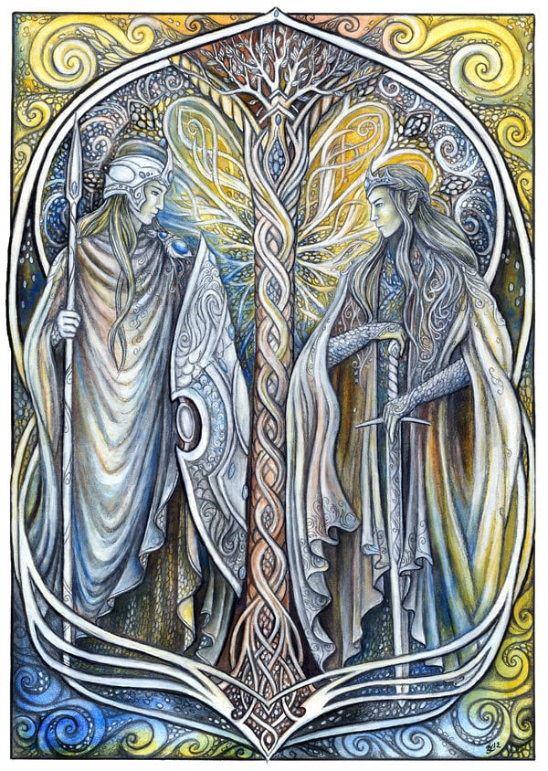

-
Elves
In J. R. R. Tolkien's writings, Elves are the first fictional race to appear in Middle-earth. Unlike Men and Dwarves, Elves are immortal, though they can be killed in battle. If so, their souls go to the Halls of Mandos in Aman. After a long life in Middle-earth, Elves yearn for the Earthly Paradise of Valinor, and can sail there from the Grey Havens. They feature in The Hobbit and The Lord of the Rings. Their history is described in detail in The Silmarillion.
Tolkien derived Elves from mentions in the ancient poetry and languages of Northern Europe, especially Old English. These suggested to him that Elves were large, dangerous, beautiful, lived in wild natural places, and practised archery. He invented languages for the Elves, including Sindarin and Quenya.
Tolkien-style Elves have become a staple of fantasy literature. They have appeared, too, in film and role-playing game adaptations of Tolkien's works.

-
Dwarves
The Dwarves are a race of humanoids shorter than Men, and larger than Hobbits. The Dwarves were created by the Vala Aulë, before the Firstborn awoke due to his impatience for the arrival of the children of Ilúvatar to teach and to cherish. When confronted and shamed for his presumption by Ilúvatar, Eru took pity on Aulë and gave his creation the gift of life but under the condition that they be taken and put to sleep in widely separated locations in Middle Earth and not to awaken until after the Firstborn were upon the Earth. They are mortal like Men, but live much longer, usually several hundred years. A peculiarity of Dwarves is that both males and females are bearded, and thus appear identical to outsiders.

-
Ents
Ents are a species of sentient beings in J. R. R. Tolkien's fantasy world of Middle-earth who closely resemble trees; their leader is Treebeard of Fangorn forest. Their name is derived from an Old English word for "giant". The Ents appear in The Lord of the Rings as ancient shepherds of the forest and allies of the free peoples of Middle-earth during the War of the Ring.
-
Hobbits
Hobbits are a fictional race of people in the novels of J. R. R. Tolkien. About half average human height, Tolkien presented Hobbits as a variety of humanity, or close relatives thereof. Occasionally known as halflings in Tolkien's writings, they live barefooted, and traditionally dwell in homely underground houses which have windows, built into the sides of hills, though others live in houses. Their feet have naturally tough leathery soles (so they do not need shoes) and are covered on top with curly hair.
-
Dragons
Dragons (or "worms") appear in several varieties, distinguished by whether they have wings and whether they breathe fire (cold-drakes versus fire-drakes). The first of the fire-drakes (Urulóki in Quenya) was Glaurung the Golden, bred by Morgoth in Angband, and called "The Great Worm", "The Worm of Morgoth", and "The Father of Dragons".
-
Trolls
Trolls are portrayed as monstrously large humanoids of great strength and poor intellect. In The Hobbit, like the dwarf Alviss of Norse mythology, they must be below ground before dawn or turn to stone, whereas in The Lord of the Rings they are able to face daylight.
-
Orcs
An orc is a race of humanoid monsters, also called "goblin". In Tolkien's The Lord of the Rings, orcs appear as a brutish, aggressive, ugly, and malevolent race of monsters, contrasting with the benevolent Elves. They are a corrupted race of elves, either bred that way by Morgoth, or turned savage in that manner, according to the Silmarillion.